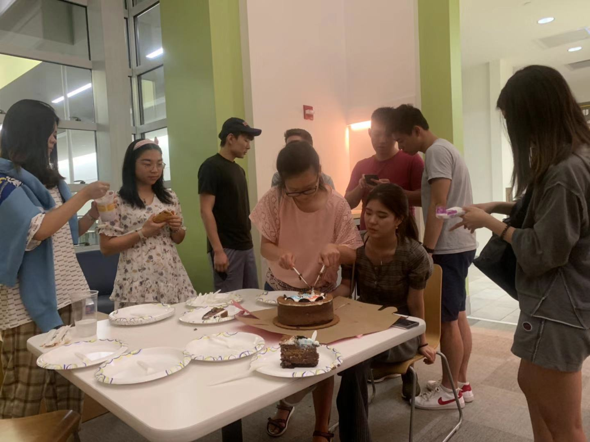

Hi! Welcome to my projects page, where I delve into some individual and group projects I have made. Some are start-up ventures, business ideas, or school projects. Today, I will be going over 3 projects: an AI fitness app project, my cooking game app, and a midnight food start up idea.
Origin AI Fitness Startup
This project I created with a group of 5 students, from Princeton, Cornell, UC San Diego, and one more. It was a project during the summer of 2020 when the pandemic was relatively new. So I decided to sign up for the Origin Startup project. In my team, I was in charge of the design of the wireframe, and collect from customer insights but also act as the intermediary between the business and code. Our idea is an AI real-time response to people exercising with video turned on of them exercising in the app. It can be used not only for athletic activities which require perfect posture ie. swimming, but also for physical therapy. So our market not only targets the young, but also old. It was a very fun project, although it did not continue to become an actual startup. I would like to start one at CMU but there is too much homework, otherwise I would invite a group of people I know to create something to connect Wechat groups many people do not have access to.
Munchies Midnight Food Truck
This was an idea started from a Carnegie Mellon Startup Hackathon, a one-day event where a group of 4 students come together to create a slide deck and poster advertisement. Some students came with a pre-made slidedeck they use for every competition to receive money, and it seemed the judges prefer 'advanced' topics rather than 'simple-but-in-demand' ones, because sometimes in life the most simple ideas ones that make it big. Our idea was a midnight food truck in the college areas, because almost everything 'foodwise' is closed at 9-10pm. There is a huge market of college students who want to go places to eat or deliver even more food after the typical closing time periods. Our menu ideas were inexpensive, simple, delicious and typical of game-nights. This includes chicken wings, fries, hotdogs, burgers, salads, kebobs, and if possible desserts such as ice cream and milkshakes too.
Cooking Game App
For a Introductory Python class 15-112 I took at Carnegie Mellon when I was a freshman, I made a cooking game. In the beginning, I thought this would be easier than some other artificial intelligent backed applications. However, it seemed there were quite a few challenging for loops and positioning of images that I had to in fact use clip art to edit. It made me more interested in design using adobe creative studios, but it also took me 100 hours to create.
My True Passions
My True Passions lie in helping people, acting as the intermediary. Giving advice, telling people what their next step should be. Sometimes I can predict good or bad things that will occur. I have really good photographic memory and remember too many people's names, and my voice is very high pitched, and ears also too good (ie. could hear TV sound during class), but my eyesight is not the best. I would often go outside just to train my eyesight in middle school, which made me become more familiar and become friends with all the good people in my neighborhood. I also emphasis good and bad a lot, because there are truly good people in this world, and I love to be with them. Thus, the work which earns money and seems almost effortless is helping people, by being an intermediary, selling items, connecting those who need products or insurance etc. Of course, I will be licensed but as a student currently, time is quite limited and I still want to enjoy my life with friends as this is a once in a life change. During jobs, there wont be as many people and even less free time (8 hour work schedules not even including commute). My goals are to make one very good quality Youtube video, write a book, sell one house, talk to all the old friends I met in the past, and take one nice photo wearing a dress (because I have not done so for 6 years).
Some cool pictures of my life
